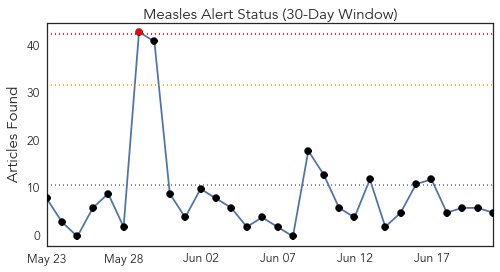
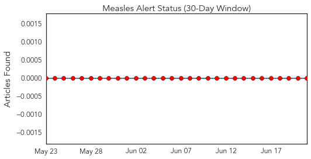
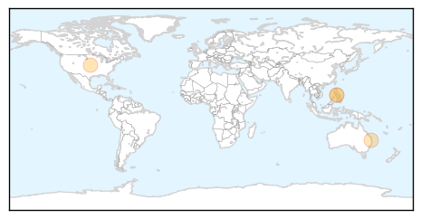
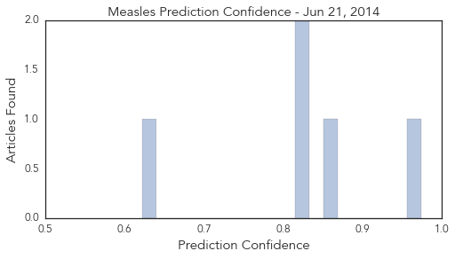

Toggle navigation
Early Warning
Daily Alerts
Measles
Jun 21, 2014
Compare to:
-
Dengue Fever
Hemmorhagic Fever
Mold/Fungal Infection
Influenza
Meningitis
Pertussis / Whooping Cough
Middle East Respiratory Syndrome
Cholera
Hepatitis
Chikungunya
Yellow Fever
Bubonic Plague
West Nile Virus
Swine Flu
Ebola
Unknown
Mumps
30 Day Trends
Web: 1
alerts
, 0
warnings
Twitter: 0
alerts
, 0
warnings
Top Articles:
0.974
Five hospitalised with measles in Hamilton
0.858
Officials confirm 13 measles cases in KC area
0.829
WFMJ.com News weather sports for Youngstown-Warren Ohio
0.826
Queensland Health issues measles alert after passenger flying on Air Niugini to Brisbane diagnosed
0.622
Measles Outbreak Continues to Grow
Top Tweets:
No tweets found for Jun 21, 2014
Web/News Articles

Tweets

Article Locations

Article Confidences
